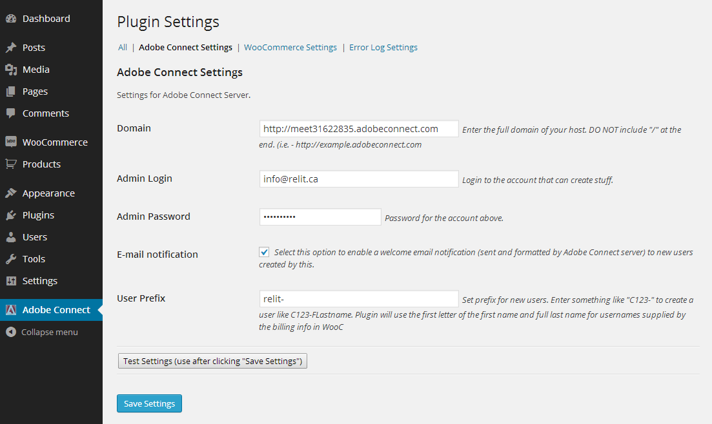
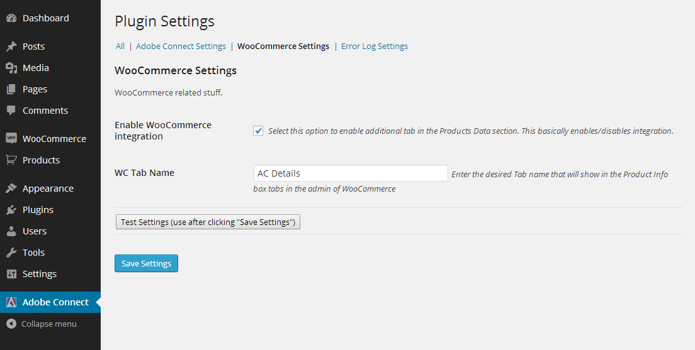
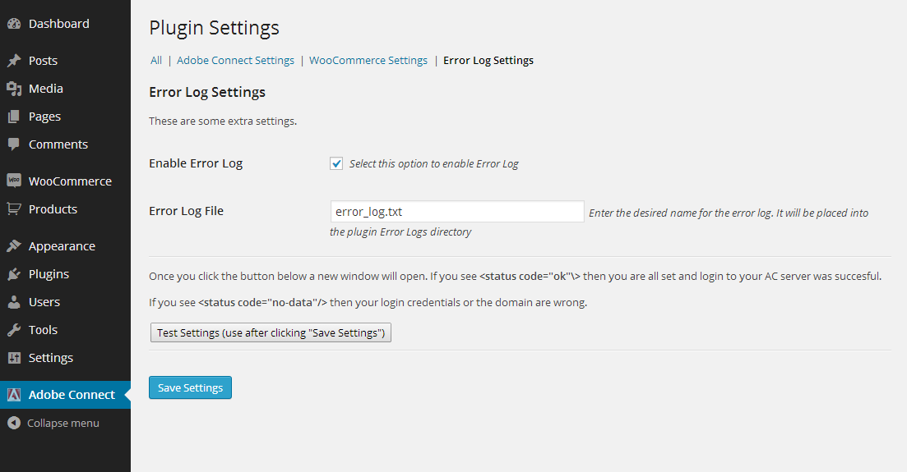
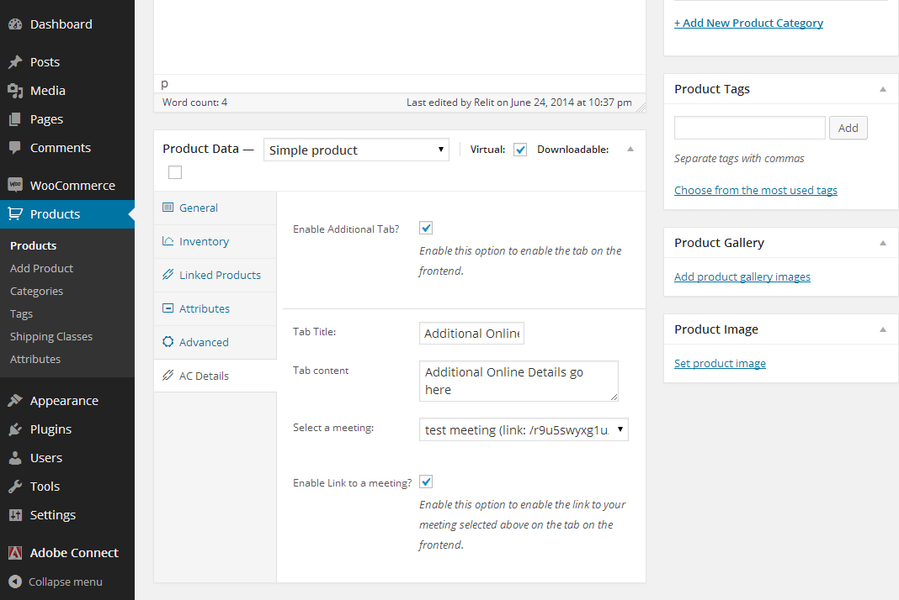
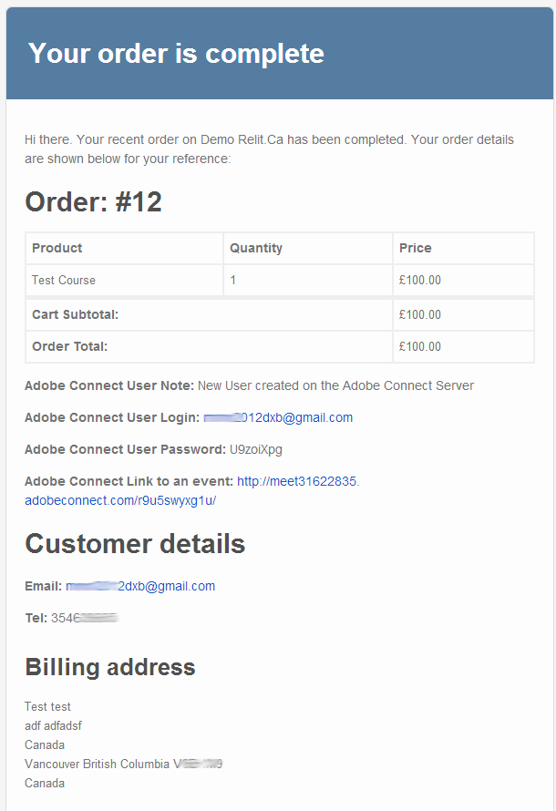

Ever wanted to automate your selling of online webinars or courses on Adobe Connect? Well, it's finally here: WooCommerce to Adobe Connect connector plugin!
Curl needs to be enabled on your webserver. It is by default enabled on majority of hosting environments and in Linux/Windows flavors of Apache webservers
After your purchase, download the plugin to your computer. In Wordpress go to Installed Plugins and click Add New, then select upload and point to the previously downloaded zip file. Press Install Now. Once finished, activate the plugin. You will see a menu item "Adobe Connect" on the main menu of your dashboard.
In the configuration screen you will need to provide the following info:
Adobe Connect Settings
Domain : Enter the full domain of your host. DO NOT include "/" at the end. (i.e. - http://example.adobeconnect.com)
Admin Login: Login to the account that can create stuff.
Admin Password: Password for the account above.
E-mail notification: Select this checkbox to enable a welcome email notification (sent and formatted by Adobe Connect server) to new users created by this.
User Prefix: Set prefix for new users. Enter something like "C123-" to create a user like C123-FLastname. Plugin will use the first letter of the first name and full last name for usernames supplied by the billing info in WooCommerce (works for older versions of Adobe Connect servers)
WooCommerce Settings
Enable WooCommerce integration: elect this option to enable additional tab in the Products Data section. This basically enables/disables integration.
WC Tab Name: Enter the desired Tab name that will show in the Product Info box tabs in the admin of WooCommerce
Error Log Settings
Enable Error Log: Select this option to enable Error Log. It's a lot easier to diagnose problems and helps greatly the support team.
Error Log File: Enter the desired name for the error log. It will be placed into the plugin Error Logs directory
Testing your settings
If you filled all of those out then it's time to test things.
Once you click the "Test Settings" button a new pop-up window will open. If you see <status code="ok"\> then you are all set and login to your AC server was succesful.
If you see <status code="no-data"/> then your login credentials or the domain are wrong.
Sample of the Product Data Screen
Sample of the Order Completed e-mail
